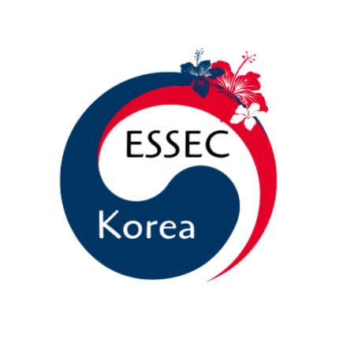
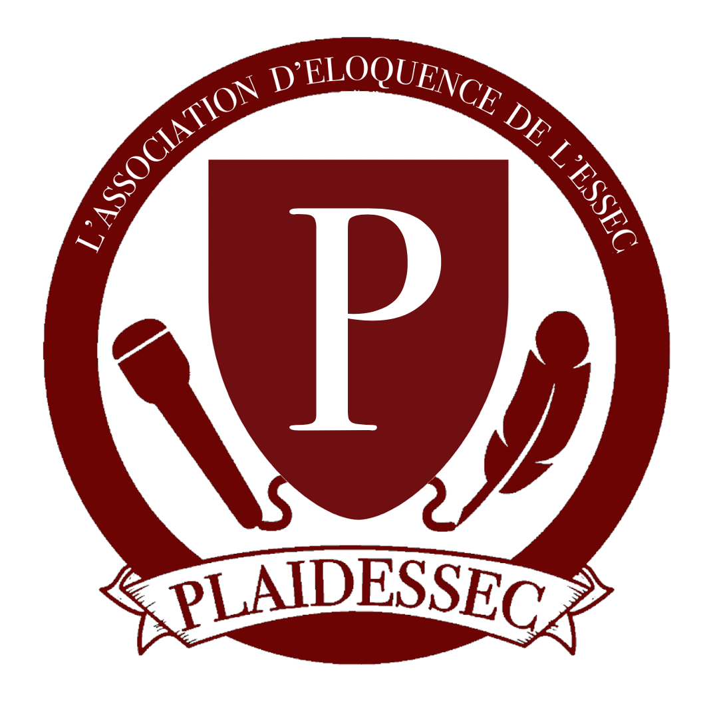
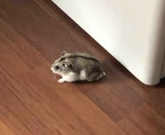

Bonjour! Je m'appelle Lamia. Je suis née à Versailles et j'ai vécu en France durant ces 19 dernières années. D'origine marocaine, je me rends souvent à Casablanca où réside ma famille. Je suis très attachée à cette double culture car à mes yeux cela constitue une réelle richesse. Par ailleurs, je pars en échange à Rabat au S4 et j'ai hâte de pouvoir retourner au Maroc! Je parle donc français, arabe, anglais, allemand et j'apprends le japonais à l'école. Je vis actuellement à Cergy car je suis étudiante en Business Administration à l'ESSEC.
Je suis actuellement membre de deux associations à l'ESSEC. La première est ESSEC Korea 🇰🇷 qui est une association internationale créée pour promouvoir la culture coréenne et ses traditions parmi la communauté étudiante de l'ESSEC. Mon rôle en tant que secrétaire générale est de créer des évènements ainsi que du contenu dans le but de promouvoir notre association!
Je suis également membre de l'association d'éloquence de l'ESSEC : Plaidessec. 🎙 En tant que membre du pôle communication, j'aide à promouvoir les évènements de l'association dans la vraie vie et sur les réseaux sociaux. Il s'agit de mon association favorite car nous organisons des débats et des joutes oratoires sur des sujets très intéressants et on en apprend toujours davantage.
J'aime beaucoup la lecture et je suis passionée de littérature. Malheureusement, les études supérieures monopolisent tout mon temps, si bien que je n'ai plus l'occasion de m'y plonger. Je trouve regrettable qu'aujourd'hui les gens ne prennent plus le temps de lire car j'estime que la lecture aide au développement de notre intellect et pourrait potentiellement freiner le QI moyen français dans sa chute.
Mon goût pour la lecture est plutôt varié. Je lis des romans historiques, politiques mais principalement des romances, les plus clichées possibles de préférence. Si je devais nommer un de mes livres préférés (ce qui n'est pas une simple tâche), il s'agirait du roman Les Collisions de Joanne Richoux, qui s'inspire des Liaisons Dangereuses, grand classique de la littérature. Sinon en ce moment je lis Mado, retour de l'enfer dont j'ai récemment rencontré l'auteur. Il s'agit de l'histoire d'une femme qui doit affronter l'absence de son mari, parti au front pour la Grande Guerre.
J'ai toujours été passionée de politique depuis mon plus jeune âge. C'est pour ça que durant mon année de terminale j'ai tenté Sciences Po, que j'ai par ailleurs lamentablement échoué. Mais il ne faut jamais rester sur un échec. En effet, j'ai réussi à me faire à l'idée qu'on pouvait faire de la polique sans forcément passer par Sciences Po.
Une fois après avoir digéréré ce que j'ai longtemps considéré comme ma plus grande défaite, j'ai décidé de m'intéresser de plus près à la politique de droite et plus précisement au parti des Républicains. Grande fan des figures féminines politiques telles que Dati ou Pécresse, j'aspire à faire de la politique mon futur domaine de prédilection. (voir ci-dessous une photo de moi et Monsieur Macron mdr mes cernes c'est chaud)
Le jour de mes 18 ans mon père m'a offert un hamster nain russe. Ma mère n'était absolument pas d'accord car mon père ne lui en avait pas parlé préalablement. Ainsi, ma mère était sur le point de demander le divorce à cause d'un hamster. Pour éviter le divorce de mes parents j'étais prête à le rendre à l'animalerie, à contre-coeur. Puis au fil des jours ma mère s'est habitué à lui et elle l'adore. Il s'appelle Saiki et c'est le hamster le plus adorable du monde (contrairement à ce que certains peuvent en dire).
J'adore mon hamster parce qu'il me tient companie, même s'il ne fait pas grand chose pour. J'aime prendre le temps de m'occuper de lui. Il se nourrit principalement de graines et d'eau. Mais comme il a des goûts de luxe, il n'apprécie que la marque de graines la plus premium. Il m'arrive de lui donner des friandises quand il est sage et qu'il fait un peu d'exercice en tournant dans sa roue. Mais comme il vit chez mes parents, ce sont principalement eux qui s'occupent de lui et je leur en suis très reconnaissante. Mon hamster est fainéant et passe la plupart de son temps à dormir ou à ronger les barreaux de sa cage. J'essaie de le sortir le plus souvent possible car je n'aime pas le voir enfermé. Mais comme il a une cage de princesse, il y fait bon vivre et il ne s'en plaint pas trop. Mon hamster = ma vie. 